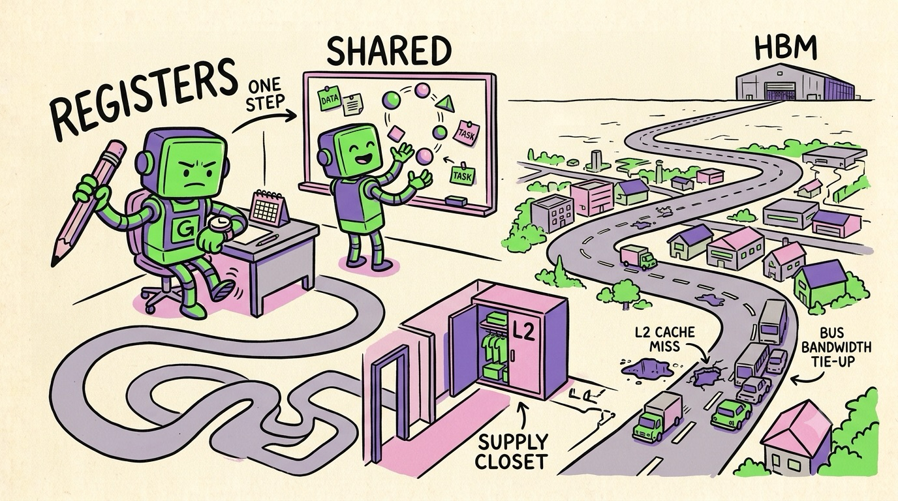

Chapter 05 · Where The Time Actually Goes
The Memory Mountain
Here's the secret that separates people who use GPUs from people who understand them: on a modern GPU, arithmetic is nearly free. The chip can do hundreds of trillions of operations per second. What it can't do is feed itself. Getting a number from memory to a core costs more time — often 100× more — than the math you do with it. Every serious GPU optimization is really a memory optimization wearing a disguise.
The pyramid
GPU memory is a pyramid: tiny-and-instant at the top, huge-and-far at the bottom. Learn the four levels and the rough costs — these numbers explain almost everything about GPU performance:
- Registers — each thread's private variables. Effectively
instant. This is where
int iandsumfrom Chapter 4 live. (A warp's registers never leave the SM — that's what makes zero-cost warp switching possible.) - Shared memory / L1 — a ~228 KB scratchpad you program explicitly, shared by the threads of one block. Think "the team's whiteboard."
- L2 cache — an automatic, chip-wide cache. You don't control it; you just benefit when data gets reused.
- Global memory — the "80 GB" on the spec sheet. Data-center GPUs use HBM (High Bandwidth Memory: DRAM dies stacked vertically right next to the GPU die — H100: 3.35 TB/s); gaming cards use GDDR chips around the board (RTX 5090: 1.79 TB/s of GDDR7). Huge, and hundreds of cycles away.
3.35 TB/s sounds infinite. It isn't — divide by the compute. An H100 can do ~989 trillion FP16 operations/sec but read only ~3.35 trillion bytes/sec. That's ~300 math ops per byte just to break even. Read a number, add 1, write it back? The cores spend 99% of their time idling. The ratio of math-per-byte is called arithmetic intensity, and it decides everything (Chapter 8 uses it to explain LLM speed).
Coalescing: the bus, not the taxi
Global memory has a quirk that every GPU programmer learns in week one. The hardware can't fetch one byte at a time — it fetches in chunks (32–128 byte transactions). When a warp's 32 threads each ask for 4 bytes, the memory system looks at the 32 addresses and asks: can I serve these with few chunks?
If thread i reads data[i] — 32 neighbors, consecutive
addresses — the whole warp is served by a handful of transactions.
That's a coalesced access: everyone rides one bus. But if
thread i reads data[i * 1000] — addresses scattered across
memory — the hardware needs 32 separate transactions. Same
instruction, up to 32× slower. Everyone took a private taxi.
Shared memory: the team whiteboard
Now the fun tool: that ~228 KB scratchpad each block gets. The pattern that uses it appears in virtually every fast GPU program, so let's spell it out with matrix multiplication — the operation AI spends its life doing.
Multiplying two 4096×4096 matrices naively means every output element re-reads an entire row and column from global memory — each input value gets fetched 4096 times. Horrifying. The fix is tiling:
- Each block claims a small output tile (say 32×32).
- Its threads cooperatively load the needed slices of A and B into shared memory — coalesced, each value fetched from HBM once.
__syncthreads()— everyone waits at the barrier until the tile is fully loaded (this sync is exactly what blocks exist to provide).- Everyone computes on the whiteboard at ~20-cycle speed, reusing every loaded value 32 times. Slide to the next tile; repeat.
the tiling idiom (sketch)__shared__ float tileA[32][32], tileB[32][32];
for (int t = 0; t < numTiles; t++) {
tileA[ty][tx] = A[…]; tileB[ty][tx] = B[…]; // everyone grabs one value
__syncthreads(); // wait for the whiteboard
for (int k = 0; k < 32; k++)
sum += tileA[ty][k] * tileB[k][tx]; // 32 reuses per load!
__syncthreads();
}
This one idea — stage data in shared memory, reuse it many times — is the backbone of cuBLAS, FlashAttention, and every fast kernel you've ever benefited from. (Tensor Cores, next chapter, are this idea cast directly into silicon.)

A funny zine-style cartoon map, hand-drawn ink with flat colors (electric green, violet, pink on cream paper): a cute robot worker at a desk. Its pencil is right in its hand (labeled "REGISTERS"), a whiteboard is one step away (labeled "SHARED"), a supply closet is down the hall (labeled "L2"), and a gigantic warehouse ("HBM") sits across town connected by a long winding highway with a tiny delivery truck on it. The robot checks a watch impatiently while a second robot happily juggles work at the whiteboard. Distances hilariously exaggerated: the warehouse drawn tiny on the horizon. No other small text. Target size ~1280×720px, 16:9 landscape; composed for a small on-page figure, subject centred with safe margins — it is letterboxed into a 16:9 box, so keep nothing important near the edges.
Generate this with your image agent, then drop the file here.
"My GPU has 3 TB/s, memory can't be my problem." It's always your problem. Profile any real workload — the profiler will almost always show memory throughput pinned at 100% while the shiny compute units nap. The spec-sheet FLOPS are a prize you unlock with data reuse, not a default you're owed.
We now have the full general-purpose machine: cores, warps, kernels, memory. Before we race off to AI, let's pay respects to the GPU's first love — and see what graphics hardware actually does with all this — because the pipeline that draws your games still explains half the chip's design.
Sources NVIDIA CUDA C++ Best Practices Guide, "Memory Optimizations" (docs.nvidia.com) · NVIDIA H100 Architecture Whitepaper (nvidia.com) · "Dissecting the NVIDIA Hopper Architecture through Microbenchmarking" (arxiv.org/abs/2501.12084)